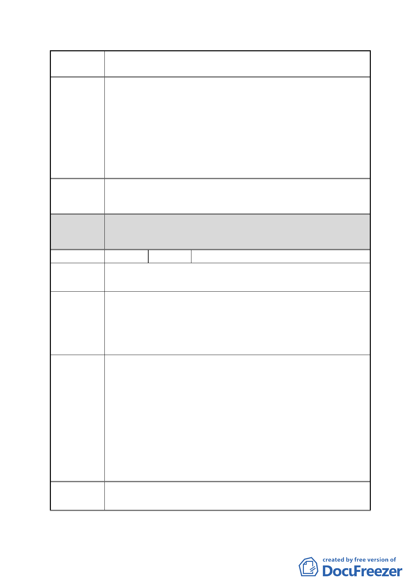

案 名 擬定臺北市南港區鐵路地下化沿線土地細部計畫案
建議辦法
市府回應
說明
1.南港區南港段四小段本巷居民（小地主）「免予回饋」土地。
2.保證原址原地分回本巷居民原持有土地面積。
3.最小建築面積給予基準容積 15％獎勵規模獎勵。
4.建蔽率提升至 65％。
5. 若 無 法 保 證 給 予 本 巷 全 體 居 民 應 有 之 居 住 權 益 與 生 活 保
障，本巷居民將堅持不參與都更，誓死抗爭到底，保衛家園，
因退守一步，我們將流離失所，要在這鄉親土親落腳生根的
南港繼續生活下去。
同編號 7。
都委會 1.本陳情地點非屬修正後細部計畫範圍。
決議 2.同意以市府回應說明辦理。
編號
12 陳情人 刁承德、孔張阿菊、林金洲
南港路二段 23 巷
陳情地點
陳情理由
建議辦法
市府回應
說明
依據「修訂臺北市主要計畫商業區（通盤檢討）計畫案內有
關商業區變更回饋規定」明文規定，為配合重大政策及產業
發展需要，得視個案需要循都市計畫程序，經臺北市都市計
畫委員會同意後，免予回饋。本巷居民均為小面積地主，如
再回饋土地則所剩無幾。
1.南港區南港段四小段本巷居民（小地主）「免予回饋」土地。
2.保證原址原地分回本巷居民原持有土地面積。
3.最小建築面積給予基準容積 15％獎勵規模獎勵。
4.建蔽率提升至 65％。
5. 若 無 法 保 證 給 予 本 巷 全 體 居 民 應 有 之 居 住 權 益 與 生 活 保
障，本巷居民將堅持不參與都更，誓死抗爭到底，保衛家園，
因退守一步，我們將流離失所，要在這鄉親土親落腳生根的
南港繼續生活下去。
6.本區未來變更為商業區，使用強度同第三種商業區一樣，容
積應為 560％。
同編號 7。
- 25 -